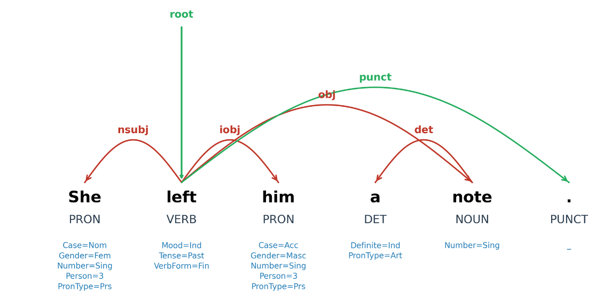
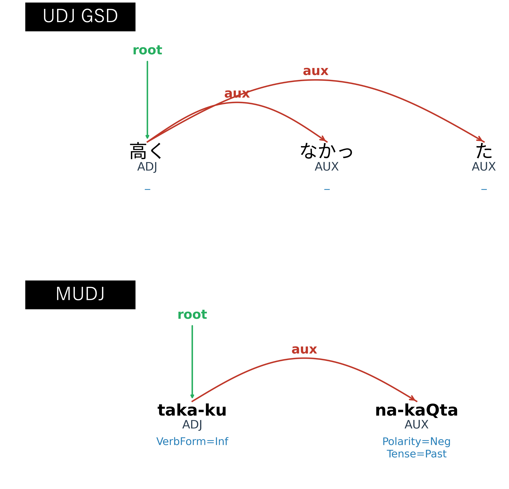
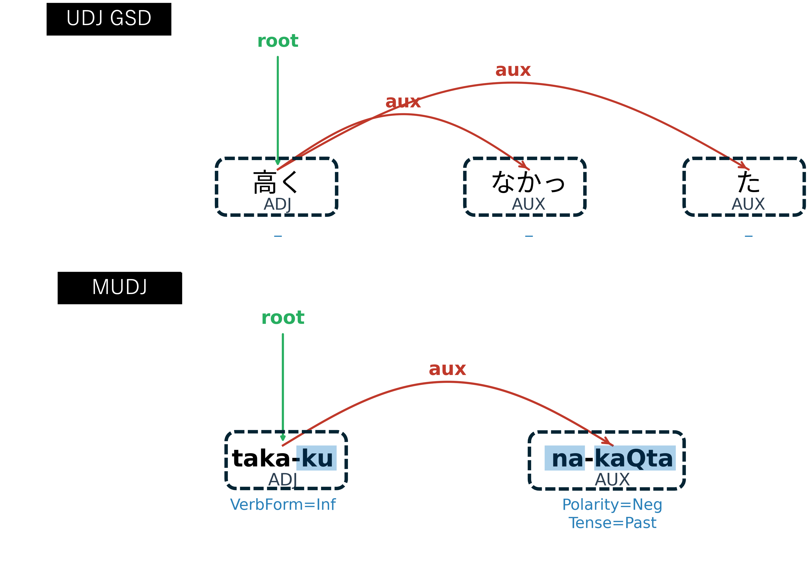
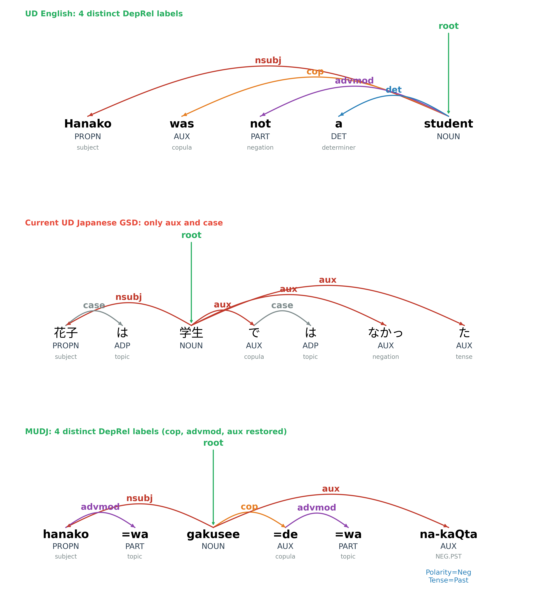
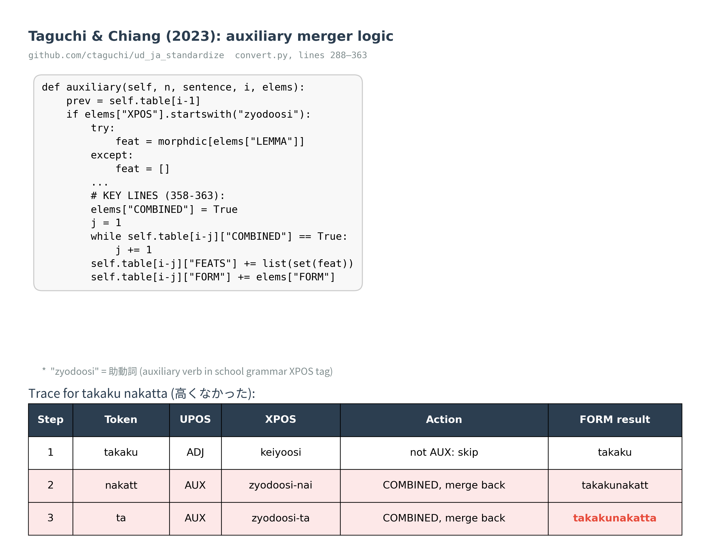
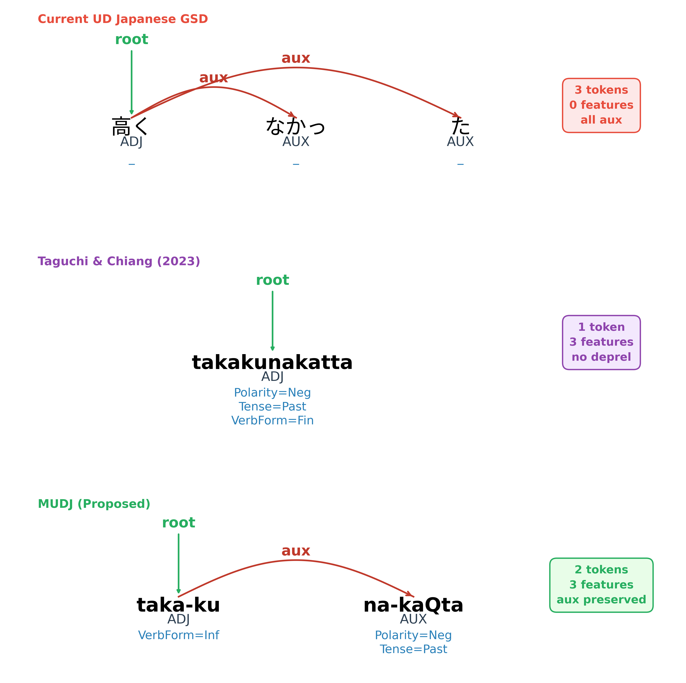
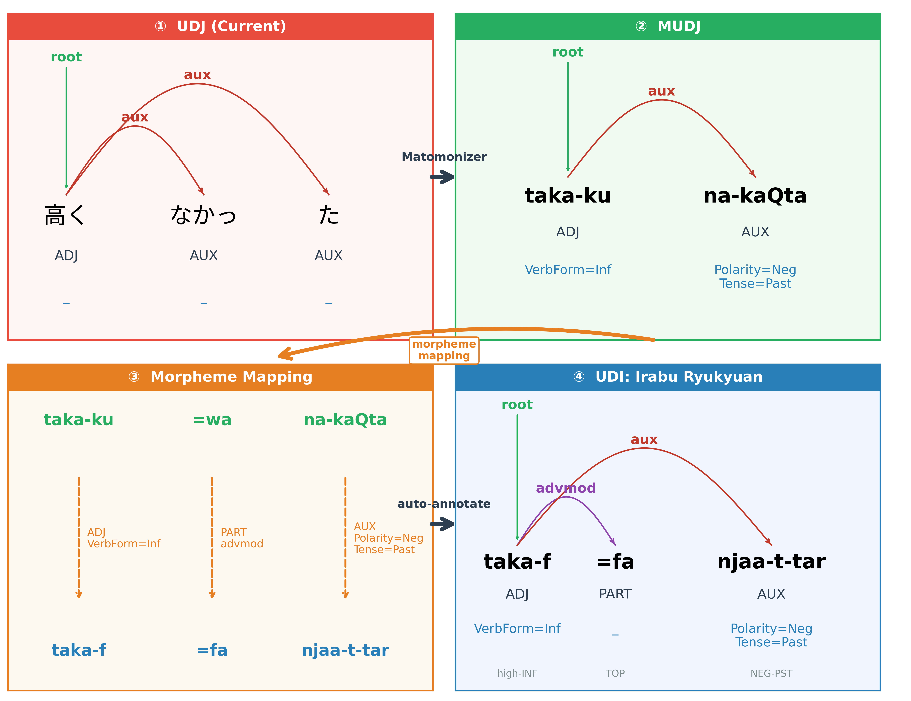

FEATS で記述UPOS、依存関係 → DepRel
UDJ は学校文法（GB）に基づく仮名ベースの分析を採用
→ UD の「語ベース」原則と根本的に矛盾
| # | 問題 | 内容 |
|---|---|---|
| 1 | トークン化 | 形態素レベルの分割（語レベルではない） |
| 2 | FEATS | 形態論的特徴の記述がほぼゼロ |
| 3 | DepRel | 依存関係ラベルの不適切な仕様 |
以下、takaku nakatta（高くなかった）で全問題を図示する

UDJ：形態素 3 トークン（高く・なかっ・た） → MUDJ：語 2 トークン（taka-ku・na-kaQta）

UDJ では FEATS ≈ 0% → 日本語が「孤立語」に見える致命的な問題

UDJ：cop / advmod / aux を全て aux に → 英語との対比が不可能
UDJ のトークン化・FEATS 問題に正面から取り組んだ先駆的研究
XPOS で助動詞を検出し先行トークンにマージFEATS として記録→ 現行 UDJ が日本語の形態的類型を
根本的に誤表示していることの定量的証拠
| 前 | 後 | |
|---|---|---|
| vs ベトナム語 | 0.9998 | 0.67 |
| vs ロシア語 | 0.67 | 0.9992 |
| IS score | 0.0 | 9.7–11.6 |
IS score: ロシア語 11.5、トルコ語 13
ベトナム語 0.0 → retok 後は膠着語圏に移行

問題：束縛形態素か自立語かを区別せず、形態的複雑さが過大評価されがち

GSD：3 形態素トークン・FEATS なし｜Taguchi：1 トークン・DepRel 消失｜MUDJ：2 語・FEATS 付与・DepRel 維持
GB の語分割を完全に放棄し、言語学的に妥当な語ベースの分割に自動変換
| Phase | 処理 | 例 |
|---|---|---|
| P0 | MWT 展開 | じゃ → で＋は |
| P1 | Chain 統合 | ている → 2 語として統合 |
| P2 | 接辞マージ | た・ない・ます → 語内部に統合 |
| P3a | UPOS / DepRel 修正 | は → PART / advmod |
| P3b | 音韻変換 + FEATS + Gloss | kana → phoneme、特徴付与 |
matomo=na（まともな）＝「ちゃんとした」の意
| GSD トークン数 | GSD Feats | M-UDJ トークン数 | Gloss | Feats | |
|---|---|---|---|---|---|
| train | 168,333 | 0.6% | 154,108 | 48.9% | 34.5% |
| dev | 12,287 | 0.4% | 11,240 | 48.7% | 34.7% |
| test | 13,034 | 0.8% | 11,825 | 49.8% | 36.0% |
Gloss 約 49%（GSD にない新情報を付与）
Feats 34.5–36.0%（GSD: 0.4–0.8% → +34pp）
トークン削減 retokenization により約 8.5% 減
→ 日本語が「膠着語」として正しく特徴づけられる

UDJ → MUDJ → 形態素対応表 → 方言・琉球諸語 UD の自動構築
日琉諸語は形態統語的に類似
→ 形態素の体系的対応づけが可能
| SJ | taka-ku na-kaQta |
| 伊良部 | taka-f=fa njaa-t-tar |
MUDJ の形態素対応表を利用して
UD 未登録の日本語方言・琉球諸語の
ツリーバンクを自動生成
現時点は試行錯誤の段階であり、かなり不完全
ご清聴ありがとうございました
論文 PDF・パイプライン解説・ツール： michinorishimoji.github.io/GW_20260407